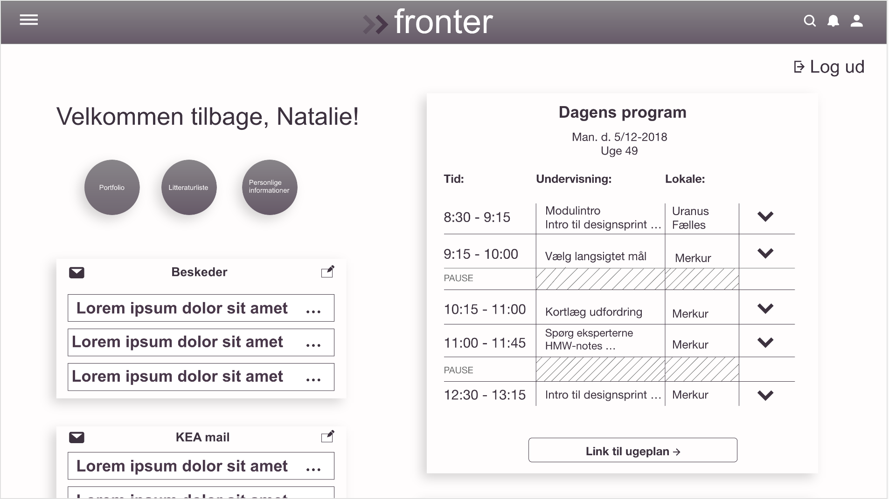
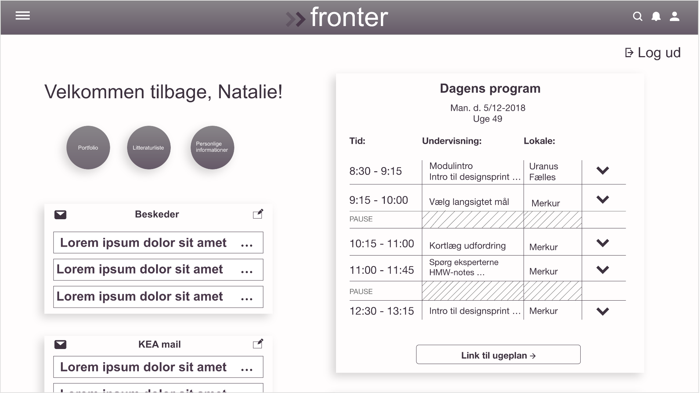

Proces:
Efter at have lavet mit user-research, gik jeg i gang med designsprintet. Et designsprint er en 5-dages proces hvor man går fra idé til prototype ved hjælp af forskellige metoder og værktøjer.
Vi lavede fælles på holdet et 'long-term goal', for at identificere vores ønskede formål. Ud fra vores 'long-term goal' lavede vi 'sprint-questions'; man overvejer hvad der kan forhindre en i at nå målet og skriver dem efterfølgende ned. Til slut lavede vi et 'map', for at belyse eventuelle problematikker der kan opstå under en brugerrejse.
Ud fra disse var det muligt for mig at påbegynde min sketchfase og illustrere mine idéer. Jeg lavede 'The Four-Step Sketch' som indeholder 'notes', 'ideas', 'crazy 8's' og til sidst 'decide.'
Herfra lavede jeg et storyboard der viste de userflows jeg ville have i min prototype.
Vi havde af underviserne fået et styletile, lavet ud fra KEA's website. Ud fra dette samt mine skitser var det nu muligt for mig at påbegynde min prototype i Adobe XD.
Samlet refleksion over begge opaver:
Under opgaven blev jeg desværre syg på testdagen og jeg fik derfor ikke udført nogle test. Dette resulterede i en manglende viden omkring fejl og mangler på min prototype og om hvorvidt den opfylder målgruppens behov eller ej.
Programmer brugt:
Adobe XD
 
